ハンターマウンテン塩原・エーデルワイススキーリゾート
| 日付 | 2020年2月1日（土） - 2020年2月2日（日） |
|---|---|
| メンバー | 家族（妻、長女・8歳、長男・6歳） |
| アクセス | 車 |
【1日目】【2日目】
2日目
2日目はエーデルワイススキーリゾートへ行く。
ハンターマウンテンのすぐ近くにあるスキー場だ。
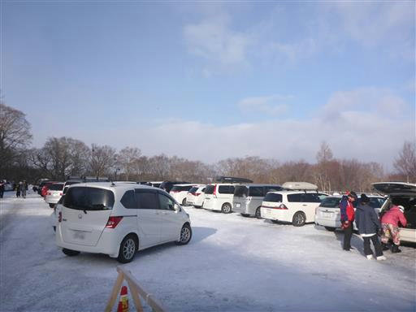
長い長いリフトに乗る。速度が遅いためなかなか上に到着しない。
日は差しているが雪がちらついている。
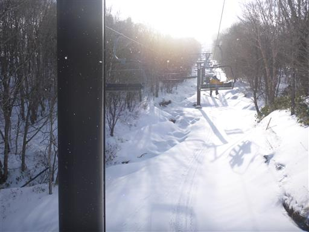
落ちてくる雪は見事な氷の結晶だ。どれも六角形で非常に美しい。
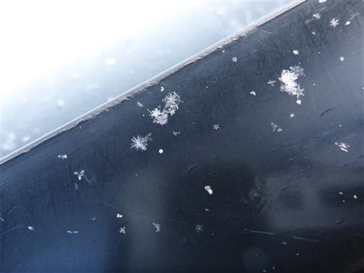
ようやく上まで到着し、滑り始める。
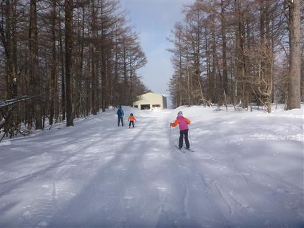
こちらのスキー場はハンターマウンテンより空いている。
ちょっとマイナーなコースを滑るとガラガラだ。
息子は娘よりスピードを出すのが好きで、速度が合わないため
パーティを2つに分けて息子とペアでずっと滑り続ける。
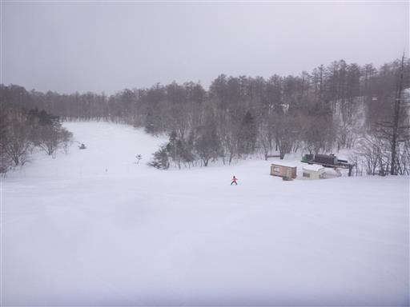
石の上にこんもりと雪が積もっている。
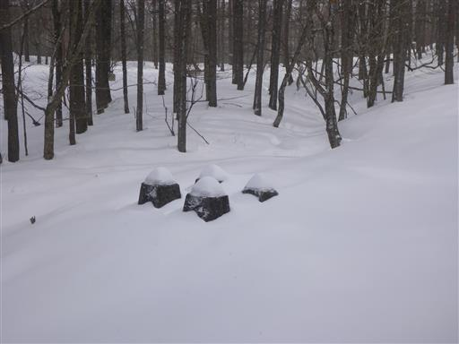
レストランは比較的空いているので助かる。
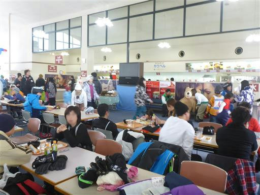
午後になると青空が広がってくる。
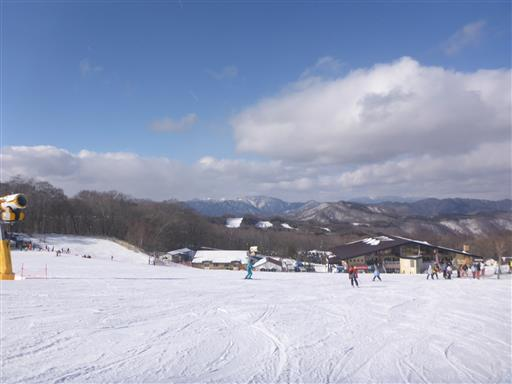
日が差すと雪の上にできる陰が美しい。
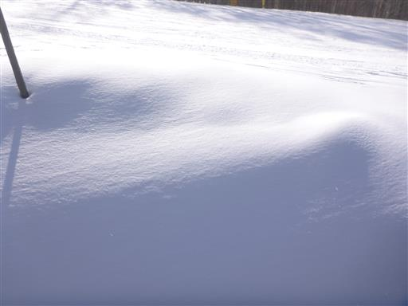
こちらは縞々模様。
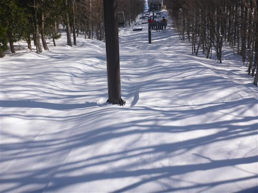
このスキー場で唯一高速に動く第2クワッドリフト。
このリフト乗り場がスキー場最下部より少し上にあり、下まで滑ってしまうと乗ることができない。
休憩したりトイレに行ったりすると、遅いリフトに乗らなければならないのが辛いところだ。
リフトの配置が非常に悪いスキー場だ。
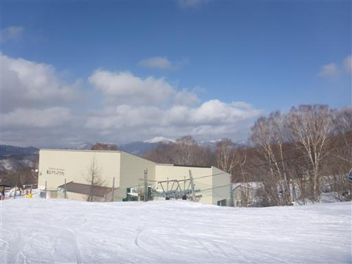
14時ごろに撤収する。
今回の2つのスキー場は近場で良いスキー場だったが、混雑具合や食事、宿などを考えると
東北道方面ではグランディ羽鳥湖の方が分がありそうだ。
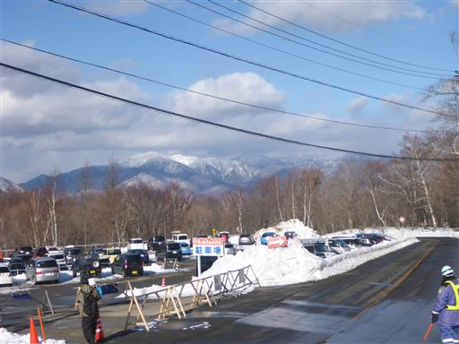